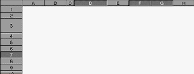

<!-- Documentation XQuad (c)1995-2000 AXENE contact axene@axene.org>
<html>

<head>
<title>Les en-têtes des lignes et colonnes</title>
</head>

<body BGCOLOR="#FFFFFF" BACKGROUND="Images/back.gif" TEXT="#000000">

<p ALIGN="right"> </p>

<p><br>
<br>
A partir de l'origine et des en-têtes de lignes et de colonnes, il est possible de
sélectionner des lignes ou des colonnes entières et de changer la hauteur des lignes ou
la largeur des colonnes. <br>
<br>
</p>

<hr>

<p align="center"><br>
 <br>
<small><i>Photo d'écran&nbsp;: En-têtes des lignes et colonnes </i></small></p>

<p><br>
</p>

<hr>

<p><br>
</p>
<a NAME="Origin">

<h3>Origine des en-têtes&nbsp;: </h3>
</a>

<p>L'origine des en-têtes est la zone rectangulaire qui forme l'intersection de la barre
horizontale des en-têtes de colonnes et la barre verticale des en-têtes de lignes.
L'origine des en-têtes n'est visible que si les en-têtes de lignes et de colonnes sont
visibles. </p>

<p>Lorsque l'on click sur l'origine des en-têtes, l'ensemble des cellules de la feuille
de calcul sont sélectionnées et la cellule A1 devient la cellule active. Cela ale même
effet que l'utilisation de l'entrée de menu &quot;<a HREF="Menu_Selection.html">Sélection</a>
/ <a HREF="Menu_Selection.html#select_all_cells_menu_entry">Sélectionner toutes les
cellules</a>&quot;. </p>

<p><br>
</p>

<h3>En-têtes de colonnes&nbsp;: </h3>

<p>La barre des en-têtes de colonnes est placée au-dessus du tableau de cellules et
permet de voir les coordonnées de colonnes (suite de lettres) des cellules. Il est
possible de masquer les en-têtes de colonnes à partir de l'entrée de menu &quot;<a HREF="Menu_View.html">Affichage</a> / <a HREF="Menu_View.html#column_headers_menu_entry">Cacher
en-têtes de colonnes</a>&quot;. </p>

<h4>Sélection de colonnes entières&nbsp;: </h4>

<p>Pour sélectionner toutes les cellules contenues dans une même colonne, il suffit de
cliquer au milieu de l'en-tête de la colonne voulue. La cellule à l'intersection de la
colonne 1 et de la colonne sélectionnée devient la cellule active. </p>

<p>Il est également possible de sélectionner une région de colonnes contiguës. Pour
cela, il faut suivre les 3 étapes suivantes&nbsp;: 

<ol>
  <li>cliquer sur une en-têtes de colonne en maintenant le bouton gauche de la souris
    enfoncé. </li>
  <li>déplacer la souris à la verticale de l'en-têtes de colonne cible. </li>
  <li>lâcher le bouton de la souris. </li>
</ol>

<p>Si l'on click sur le bouton droit de la souris pendant l'étape 2, la nouvelle
sélection est annulé. </p>

<p>Si l'on veut sélectionner plusieurs régions de cellules, il faut maintenir la touche
'<tt>Ctrl</tt>' du clavier avant et pendant l'étape 1. </p>

<p>Si l'on veut élargir ou rétrécir la dernière région de colonnes sélectionnée, if
faut maintenir la touche '<tt>Shift</tt>' (Majuscule) du clavier et soit utiliser les
touches 'flèche vers la gauche' et 'flèche vers la droite' du clavier, soit cliquer avec
le bouton gauche sur un nouvel en-tête de colonne. </p>

<h4>Changement de la largeur d'une colonne&nbsp;: </h4>

<p>Il existe deux moyens pour modifier la largeur d'une colonne&nbsp;: de façon manuelle
ou de façon automatique. </p>

<p>Changer de façon manuelle la largeur d'une colonne s'effectue suivant les 3 étapes
suivantes&nbsp;: 

<ol>
  <li>cliquer sur le bord droit de l'en-tête de la colonne à élargir ou rétrécir en
    maintenant le bouton gauche de la souris enfoncé. </li>
  <li>déplacer la souris horizontalement vers la droite pour élargir ou vers la gauche pour
    rétrécir la colonne. </li>
  <li>lâcher le bouton de la souris. </li>
</ol>

<p>Si l'on click sur le bouton droit de la souris pendant l'étape 2, le changement de
largeur de la colonne est annulée. </p>

<p>Le changement automatique de la largeur d'une colonne signifie que XQuad va calculer
automatiquement la largeur optimale de la colonne en considérant la taille du contenu de
chaque cellule de la colonne. Pour effectuer ce changement automatique, il suffit de
double-cliquer sur le bord droit de l'en-têtes de la colonne voulue. </p>

<p>Si l'on effectue un changement à la largeur d'une colonne qui est sélectionnée,
toutes les colonnes, qui sont aussi entièrement sélectionnées, verront leur taille
changer et prendre comme largeur celle définie pour la première colonne. </p>

<p><br>
</p>

<h3>En-têtes de lignes&nbsp;: </h3>

<p>La barre des en-têtes de lignes est placée à gauche du tableau de cellules et permet
de voir les coordonnées de lignes (nombre) des cellules. Il est possible de masquer les
en-têtes de lignes à partir de l'entrée de menu &quot;<a HREF="Menu_View.html">Affichage</a>
/ <a HREF="Menu_View.html#row_headers_menu_entry">Cacher en-têtes de lignes</a>&quot;. </p>

<h4>Sélection de lignes entières&nbsp;: </h4>

<p>Pour sélectionner toutes les cellules contenues dans une même ligne, il suffit de
cliquer au milieu de l'en-tête de la ligne voulue. La cellule à l'intersection de la
colonne A et de la ligne sélectionnée devient la cellule active. </p>

<p>Il est également possible de sélectionner une région de lignes contiguës. Pour
cela, il faut suivre les 3 étapes suivantes&nbsp;: 

<ol>
  <li>cliquer sur une en-têtes de ligne en maintenant le bouton gauche de la souris enfoncé.
  </li>
  <li>déplacer la souris à l'horizontale de l'en-têtes de ligne cible. </li>
  <li>lâcher le bouton de la souris. </li>
</ol>

<p>Si l'on click sur le bouton droit de la souris pendant l'étape 2, la nouvelle
sélection est annulée. </p>

<p>Si l'on veut sélectionner plusieurs régions de cellules, il faut maintenir la touche
'<tt>Ctrl</tt>' du clavier avant et pendant l'étape 1. </p>

<p>Si l'on veut élargir ou rétrécir la dernière région de lignes sélectionnée, if
faut maintenir la touche '<tt>Shift</tt>' (Majuscule) du clavier et soit utiliser les
touches 'flèche vers le haut', 'flèche vers le bas', 'Page Up' ou 'Page Down' du
clavier, soit cliquer avec le bouton gauche de la souris sur un nouvel en-tête de ligne. </p>

<h4>Changement de la hauteur d'une ligne&nbsp;: </h4>

<p>Il existe deux moyens pour modifier la hauteur d'une ligne&nbsp;: de façon manuelle ou
de façon automatique. </p>

<p>Changer de façon manuelle la hauteur d'une ligne s'effectue suivant les 3 étapes
suivantes&nbsp;: 

<ol>
  <li>cliquer sur le bord bas de l'en-tête de la ligne à agrandir ou rétrécir en
    maintenant le bouton gauche de la souris enfoncé. </li>
  <li>déplacer la souris verticalement vers la bas pour agrandir ou vers le haut pour
    rétrécir la ligne. </li>
  <li>lâcher le bouton de la souris. </li>
</ol>

<p>Si l'on click sur le bouton droit de la souris pendant l'étape 2, le changement de
hauteur de la ligne est annulé. <br>
</p>

<p>Le changement automatique de la hauteur d'une ligne signifie que XQuad va calculer
automatiquement la hauteur optimale de la ligne en considérant la taille du contenu de
chaque cellule de la ligne. Pour effectuer ce changement automatique, il suffit de double-cliquer
sur le bord bas de l'en-têtes de la ligne voulue. </p>

<p>Si l'on effectue un changement à la hauteur d'une ligne qui est sélectionnée, toutes
les lignes, qui sont aussi entièrement sélectionnées, verront leur taille changer et
prendre comme hauteur celle définie pour la première ligne. </p>

<p><br>
</p>

<hr>

<p ALIGN="right"></p>
</body>
</html>
